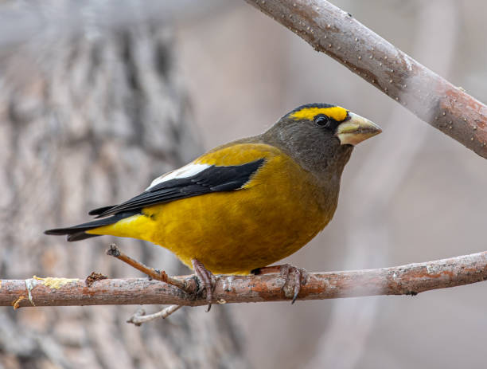
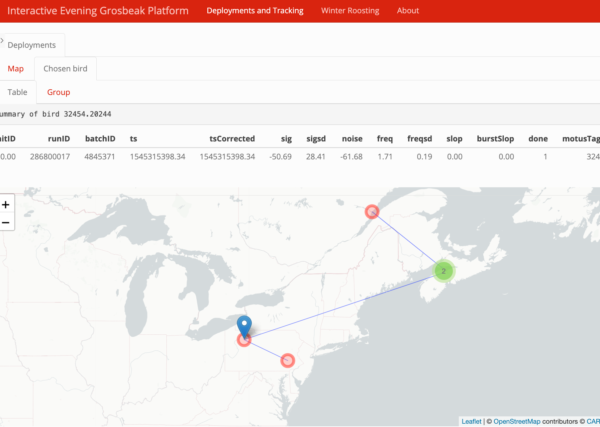
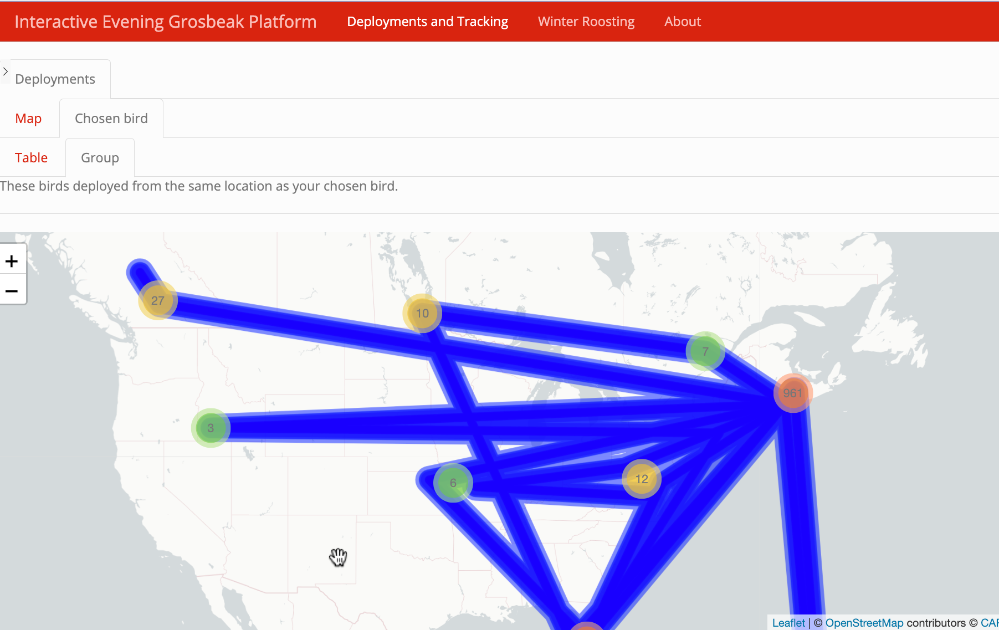
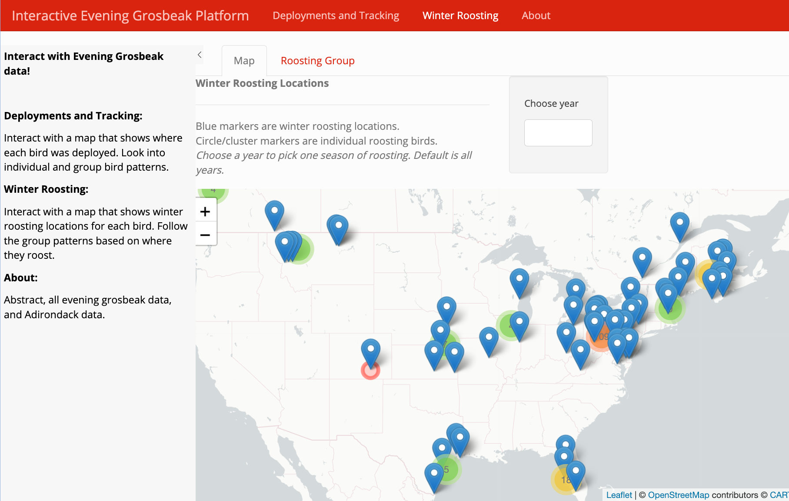
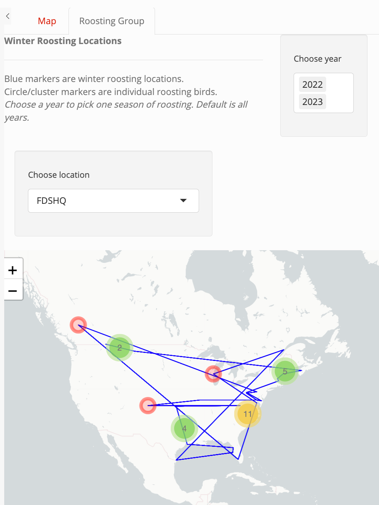

Using Interactive Graphics to Visualize Evening Grosbeak Movement and Migration Patterns
Author
Grace Bridge
Abstract
This project aims to analyze a large dataset on Evening Grosbeaks, a species within the finch family native to North America. The data comes from Motus, a network of radio receivers that are able to pick up transmissions from tagged birds. Motus has many large datasets of all types of bird species and through data cleaning in R, this project hones in on the data captured for Evening Grosbeaks. The main objective for this project was to develop a platform enabling users to observe and understand trends in their migration patterns. The R shiny app created for this showcases many features: an interactive map of deployment sites, individual bird tracking, group bird tracking (by winter roosting location and deployment location), all Evening Grosbeak data used, and all Evening Grosbeak data used from the Adirondack region. The app is available at: https://stlawu.shinyapps.io/evening_grosbeak_tracker/
Introduction
Evening Grosbeaks are an endangered species with a rapidly declining population. It is important to visualize their migration and movement patterns to then be able to analyze what is leading to their extinction.

The purpose of this project was to explore what tools from R Shiny can be used to for bird data visualizations and make raw data into an interactive, more accessible experience. The app provides users with a platform to interact with data, deployment sites, winter locations, individual trends, and group trends for the Evening Grosbeak.
Winter Spots and Breeding
For the Evening Grosbeak, it is important to look into their seasonal whereabouts. This may be a large aide in determining what is the cause of the rapidly declining population. This species is a very social species, who typically travel and roost in groups, especially in the winter.
Figure 1. Evening Grosbeak range map by American Bird Conservatory
In the winter, the Evening Grosbeak searches for food. The bird’s type of migration is called a “winter finch irruption,” that is taken by many seed-eating birds. During these “irruptions,” these birds move south of their typical breeding grounds in to find sources of winter food.
Motus
Motus is a wildlife tracking system from Birds Canada. It is composed of a network of researchers around the world who are able to contribute to the radio telemetry system. By contributing (tagging birds and setting up radio receiver locations), more researchers are then able to access the growing database of bird tracking information. While one researcher could hypothetically set up their own, small telemetry network to track a local bird, Motus creates the opportunity to connect all of these local sites and broaden data and information exponentially. Collaboration for scientists and bird-watchers across the world has been made easy by Motus.
For this application, access to a “project” was given by St. Lawrence biology professor, Dr. Susan Willson, who has a focus and interest in conservation of birds, namely the Evening Grosbeak. A “project” in Motus is an access point to the database with managed data access levels and users.
Methods
Include code
describe data wrangling and data cleaning (dplyr etc.)
interpretations of the data - describe leaflet
R
R is an extremely popular language in the world of biodiversity conservation research for visualization and analyses. R is a cohesive set of software features and tools. It is also an open-source programming language. This means that it is free for use and collaboration. Anybody is able to create and add functions through writing packages to build upon existing operators and facilities for data, statistical analyses, visualizations, etc,. Work and research done in R is very often easily reproducible because R facilitates a space for creators to document their work cleanly and has a very readable structure. R files can be rendered in many ways (Word files, pdfs, webpages, etc.) to be shared and replicated.
Motus in R
One benefit of using Motus is its standardized data format across all projects. In addition to this, because of the large network of researchers, many analyses have been well documented and created already for Motus data usage. And so, the visualizations made and the data manipulation tools needed for this project were kick started by existing work with Motus in R.
Motus R Package
Birds Canada, the creator of the radio telemetry network of Motus, has detailed documentation for an R package to use the Motus data. The website for this package gives extensive instruction on how to get started using the Motus database in R, how to access data, how to make sense of tag and receiver deployments, how to clean the data, and examples of how to explore the data.
The following is the provided code to install the package.
Click to show code
# Use these commented lines to install the packages# install.packages(c("motus", "motusData"), # repos = c(birdscanada = 'https://birdscanada.r-universe.dev',# CRAN = 'https://cloud.r-project.org'))# Load the packages for uselibrary(motus)library(motusData)
There are two types of detection databases that a user can access. One is a receiver database, comprised of every detection of registered tags at one receiver The second is a project database, comprised of every detection of specific or your registered tags across the entire Motus network. The latter was used for this project.
Once connected to the project, one can work with the data while connected to motus, but this will take lots of time and computer power. It is easier to download the data until the most recent detection, and then save as a .RDS file so that one can work faster with a local dataset as a flat dataframe.
data related to radio activity for each hour period (hourBin) at each antenna, including a count of the number of short runs used in helping identify false detections.
admInfo
internal table used to keep track of your the motus package used to create your motus file, and the data version.
antDeps
metadata related to antenna deployments, e.g., deployment height, angle, antenna type.
batchRuns
metadata for runIDs and associated batchIDs
batches
detection data for a given receiver and boot number.
filters
metadata related to user created filters associated with the specified receiver.
gps
metadata related to Geographic Positioning System (GPS) position of receiver.
hits
detection data at the level of individual hits.
meta
metadata related to the project and datatype (tags vs. receivers) that are included in the .motus file
nodeData
data related to nodes by batchID and time (ts)
nodeDeps
metadata related to nodes
projAmbig
metadata related to what projects have ambiguous tag detections
projs
metadata related to projects, e.g., project name, principal investigator.
pulseCounts
number of radio pulses measured on each antenna over each hour period (hourBin).
recvDeps
metadata related to receiver deployments, e.g., deployment date, location, receiver characteristics.
recvs
metadata related to receiver serial number and associated Motus deviceID
runs
detection data associated with a run (continuous detections of a unique tag on a given receiver).
runsFilters
a list of runIDs associated with user created filters and assigned probabilities.
species
metadata related to species, e.g., unique identifier, scientific name, common name.
tagAmbig
metadata related to ambiguous tags, e.g., ambigID and associated motusTagID
tagDeps
metadata related to tag deployments, e.g., deployment date, location, and species.
tagProp
metadata related to custom deployment properties entered by the principal investigator (e.g. body weight).
tags
metadata related to tags, e.g., unique identifier, tag characteristics (e.g., burst interval).
allambigs
lists in long-data format each motusTagID (up to 6) associated with each negative ambigID.
alltags
provides the full detection data for all tags, and all ambiguous (duplicate) tags, associated with your project. Ambiguous detections are repeated for each motusTagID represented by each ambigID.
alltagsGPS
same as alltags but includes GPS latitude, longitude and altitude (much slower to load on large databases).
Data Cleaning
initial cleaning
getting to species
getting unique bird IDs
Once the data from the .motus is made into a flat data frame, data can be cleaned. The first step was to trim the exhaustive project data down to just the Evening Grosbeak.
Click to show code
# filter to only Evening Grosbeak df <- tbl.alltags %>%filter(speciesID ==20570) %>%# Evening Grosbeak Species IDcollect() %>%as.data.frame() %>%mutate(time =as_datetime(ts)) # This also changes ts to a date variable instead of numeric (how it was read in)
From the data, it is also important to be able to grab a unique bird. A unique tag (either motusTagID or tagDeployID) is not quite capable of this. This is because, a unique motusTagID is not always a unique bird; occasionally a tag can be redeployed onto a different bird. Also a tagDeployID is not always unique when you are focusing on a specific deployment of a bird in your project. So, use a combination of these.
Now, we can grab the data for any single bird’s deployment with motusTagDepID.
R Shiny
Shiny is an R package (extension to R, standardized tools with documentation that can be installed to your machine). Once installed, this package creates the opportunity for application construction. The code for these apps have three components, the UI (user-interface object), the server function, and a final call to the shinyApp function. The UI draws up the appearance of the app; what the user is seeing. The server function is responsible for the code that performs the outputs and their functionalities. And the final call to the shinyApp function will launch the app when the code is ran.
There are many benefits to using Shiny to showcase data analyses and visualizations. To start, the interactive ability of a Shiny app can transform user accessibility to data. With these apps, there are many widgets that the creator can include in the UI (that then speak to the server output) that allows a user to choose what they are seeing from the data: slider inputs (for numerical input), text inputs, checkboxes, dropdown menus, file uploaders, etc. With this user power to choose outputs, Shiny apps can be reactive and responsive, updating the outputs of each page in real-time. Another benefit is ease of deployment for Shiny apps. Instead of code files or papers portraying research, Shiny apps can be deployed easily with URLS and showcase findings in a more fluid, interactive, and engaging way.
The following is the starting structure for a Shiny App in R:
Click to show Shiny App default code
## This is a Shiny web application. You can run the application by clicking# the 'Run App' button above.## Find out more about building applications with Shiny here:## http://shiny.rstudio.com/#library(shiny)# Define UI for application that draws a histogramui <-fluidPage(# Application titletitlePanel("Old Faithful Geyser Data"),# Sidebar with a slider input for number of bins sidebarLayout(sidebarPanel(sliderInput("bins","Number of bins:",min =1,max =50,value =30) ),# Show a plot of the generated distributionmainPanel(plotOutput("distPlot") ) ))# Define server logic required to draw a histogramserver <-function(input, output) { output$distPlot <-renderPlot({# generate bins based on input$bins from ui.R x <- faithful[, 2] bins <-seq(min(x), max(x), length.out = input$bins +1)# draw the histogram with the specified number of binshist(x, breaks = bins, col ='darkgray', border ='white',xlab ='Waiting time to next eruption (in mins)',main ='Histogram of waiting times') })}# Run the application shinyApp(ui = ui, server = server)
We can see here that this app has an option in the UI for sliderInput where the user can control the number of bins in the histogram. As the user interacts with this widget, the number of bins on the histogram is changed by the server’s response and generation of output for this input.
Next is an example of a dropdown menu (using the IRIS dataset: a popular example dataset about iris dimensions).
you can talk obout what is seen a bit, don’t have to go into detail about whether or not the data makes sense (just is it summarizing what we intend it to summarize, is it actually doing what I claim its doing. The experts actually analyze it.)
The interactive Evening Grosbeak platform was made using Shiny. From the navigation bar, the user can choose from “Deployments and Tracking,” “Winter Roosting,” or “About.” Each navigation page includes multiple tabs for exploration.
Upon launching the app, the user is met with the Deployments and Tracking page. This page first includes the map of each bird’s first deployment.The user can click through the map of different clusters until they find a specific bird at a deployment site that they want to look furhter into. Upon clicking on this circle marker, the app grabs the data for this bird and stores it to use in the next tab.
The next tab is the Chosen bird tab. In the Table nested tab: first, we have a page that shows the immediate data for the bird that was chosen from its deployment, then we have a map of the locations where this bird has pinged a receiver. In the Group nested tab we have a similar map, but it shows the pings for each of the birds deployed from the same deployment site. The lines are weighted by the frequency of the amount of birds that travelled there.
 
Winter Roosting
The next page is the Winter Roosting page. On the first tab of this page, Map, there is a leaflet map. The blue markers are of each winter location that birds have roosted. The circle and cluster markers are for the individual birds who spent the winter there. The user can choose which year of winter they want to look at (the months defined for winter roosting for this application are January, February, and December) and the default is all years. On the second tab of this page, Roosting Group, there is another leaflet map which tracks the birds from the same roosting location based on year and location.
 
About
The About includes page includes three tabs: Abstract, Data, and Adirondack Deployments. The tab simply includes the abstract for this project. The Data tab includes a data table for all of the Evening Grosbeak data used for these visualizations. The Adirondack Deployments tab includes a data table specifically for all of the Evening Grosbeak data from birds that were deployed from the Adirondack Region.
Discussion
obstacles
future applications
bio/data science student to build off of this starter app and analyze what is actually happening
needs more data cleaning (birds in south america should not be showing up) (find a map that shows bird in South America and say what you can learn from these shiny app results to further clean the data)
summer spots
more widgets for timelines (slider input to pick a time period to plot a bird)
Obstacles
Creating the Shiny App for this large dataset provided many hurdles with data manipulation and programming. One problem occurred with Shiny and reactive data. For the deployments page, the cluster/circle markers for each bird will only show up if this ta comes absolutely first in the app structure. This was a problem as we wanted to restructure the app and have the interactive deployments map later, but we had to leave it first to keep our data displayed. Another problem was also related to the reactive data on the deployments page: no other tab could have this type of reactive data that was observing events. On the deployments map, as a user clicks on a marker, the app observes this event and stores the data for the next tab. The original plan was to have a similar mechanism for the winter roosting locations map. But, when attempting to make observable clicks on this map, the deployments map data would disappear. The intended mecahnism for this was replaced in the winter groups map by adding a dropdown menu for location: not quite as fluid, but still makes it possible for a user to look through the routes of a specific wintering group.
Future and Improvements
Conclusion
what I have been able to learn and showcase through this project
Acknowledgements
I would like to thank Dr. Ivan Ramler for his support and guidance throughout this project. I would also like to thank Dr. Susan Willson for the motivation behind this project.

{kind=link}
{kind=link}
{kind=link}